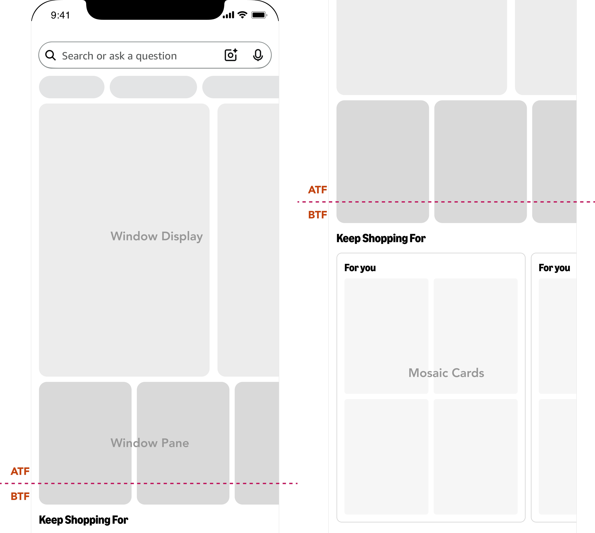

Transforming Amazon's mobile homepage into a flexible, revenue-driving discovery surface that balances personalized shopping, strategic merchandising, and ads, without breaking what already worked.
Redesigned Amazon's mobile homepage experience end-to-end, recovering lost engagement and driving $600M+ in incremental customer sales, 16% increase in homepage clicks, $100M+ in incremental sponsored product revenue, while getting buy-in from 5+ cross-functional teams on a brand-new, reusable design pattern.
In October 2024, Amazon redesigned its mobile homepage to move from a page built around individual recommendations and saved items toward one built around breadth, discovery, and strategic initiatives - introducing a Window Display carousel.
The redesign succeeded at its stated goals, but created an unintended consequence: 80% of users jumped straight into search instead of scrolling the homepage. Customers told us what was going wrong: the page felt overwhelming, they couldn't find what they were looking for, and search had become their default escape hatch. That behavior shift showed up as real, measurable loss: tens of millions of dollars in lost advertising revenue and tens of millions more in lost customer sales per month, on top of a homepage that was quietly failing at being a mobile-first experience.
This created two distinct but linked problems.
User Problem
Business Problem
To redesign the homepage's discovery experience so it could simultaneously recover lost customer engagement and sales, sustain and grow advertising revenue, and do both without breaking the one component that was already working (the Window Display carousel) or requiring a complete homepage redesign from scratch.
As the design lead, I owned the homepage product and program discovery experiences that included hierarchy redesign and the new flexible content component at its center.
Designed flexible design components and defined interaction patterns for product launch that was incorporated into the core shopping design system after rigorous testing.
Collaborated with multiple stakeholders spanning product management, engineering, art direction, the Ads team, the Amazon XCM team, Legal, the Shopping Design System team, and 3+ additional strategy teams
Influenced funding decisions by presenting north-star design work to stakeholders across shopping, ads, legal and other strategy orgs
Four constraints shaped every decision: we couldn't break what was already working (the Window Display cards), above-the-fold real estate was limited and every pixel was contested across teams, content needs were wildly diverse (products, programs, and every stage of the shopping journey), and no existing design pattern could flex to hold all of it. This meant inventing a new one.

I started by getting key stakeholders and strategy teams aligned around a shared framework: how people actually shop, from inspiration through exploration and transaction.
Working within real constraints, I restructured the homepage into three purpose-built zones, anchored by a new horizontally scrolling Window Pane component for personalized, high-velocity content and contextual Mosaic Cards for visual discovery.
I iterated through three rounds of prototyping, fixing real usability failures along the way, including unclear affordances, missing strategy labels, and banner blindness, before landing on the flexible pattern that ultimately shipped.
Window Pane
Mosaic Cards
Window Display


The product was launched in September 2025 globally. This shipped as an internal, cross-org initiative rather than a public product launch, so it there isn't any dedicated press coverage.
incremental customer sales
increase in homepage clicks
increase in vertical scrolling
incremental sponsored product revenue